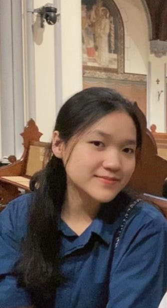

Halo, saya Yoseva Faurensia Sitohang
Mahasiswi Teknik Informatika yang berfokus pada pengembangan web responsif dan desain antarmuka yang menarik.

Tentang Saya
Latar Belakang: Saya adalah mahasiswa/i yang memiliki minat besar di bidang teknologi informasi, khususnya pengembangan web dan desain UI/UX.
Pendidikan: Institut Teknologi PLN — Program Studi Teknik Informatika.
Minat: Web development, desain antarmuka, dan eksplorasi teknologi digital.
Keahlian
HTML & CSS
JavaScript
Desain Responsif
UI/UX Dasar